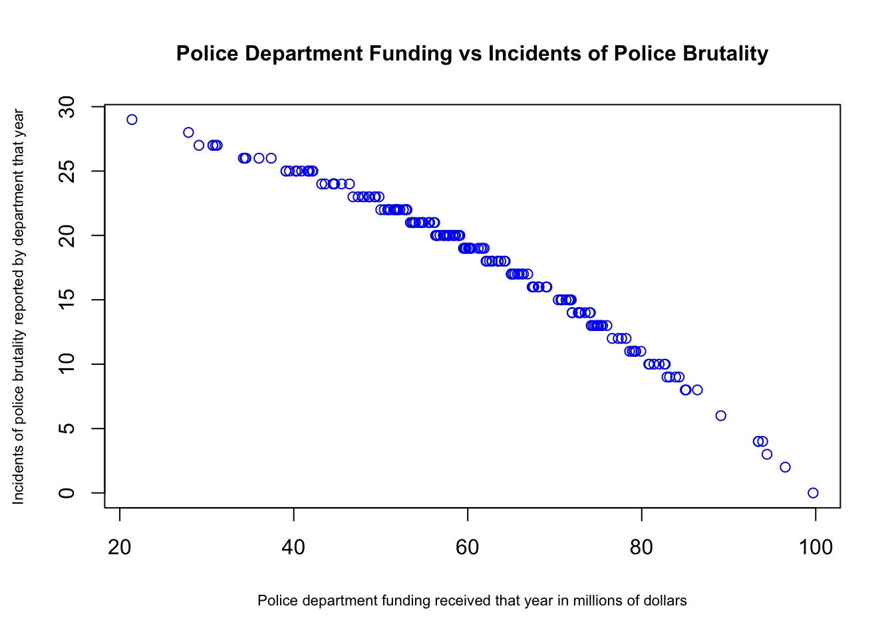

Exam 2
Isabella Werneck
11/01/2021
Instructions
Create a folder in your computer (a good place would be under Crim 250, Exams).
Download the dataset from the Canvas website (sim.data.csv) onto that folder, and save your Exam 2.Rmd file in the same folder.
Data description: This dataset provides (simulated) data about 200 police departments in one year. It contains information about the funding received by the department as well as incidents of police brutality. Suppose this dataset (sim.data.csv) was collected by researchers to answer this question: “Does having more funding in a police department lead to fewer incidents of police brutality?”
Codebook:
- funds: How much funding the police department received in that year in millions of dollars.
- po.brut: How many incidents of police brutality were reported by the department that year.
- po.dept.code: Police department code
Problem 1: EDA (10 points)
Describe the dataset and variables. Perform exploratory data analysis for the two variables of interest: funds and po.brut.
dat <- read.csv(file = 'sim.data.csv')
plot(dat$funds, dat$po.brut, main = "Police Department Funding vs Incidents of Police Brutality", ylab = "Incidents of police brutality reported by department that year", xlab = "Police department funding received that year in millions of dollars", cex.main=1, cex.lab=0.7, col="blue")
cor(dat$funds, dat$po.brut)## [1] -0.9854706There are 200 obersvations and three variables in the dataset. The three variables include “funds,” which represents how much funding the police department received in that year (in millions of dollars), “po.brut,” which represents how many incidents of police brutality were reported by the department that year, and “po.depart.code,” which represents the police department code. The two variables of interest, “funds” and “po.brut”, show strong negative correlation to each other according to the scatterplot above. The correlation coefficient -0.9854706 confirms this visual analysis.
Problem 2: Linear regression (30 points)
- Perform a simple linear regression to answer the question of interest. To do this, name your linear model “reg.output” and write the summary of the regression by using “summary(reg.output)”.
# Remember to remove eval=FALSE!!
reg.output <- lm(formula = dat$po.brut ~ dat$funds, data = (dat))
summary(reg.output)##
## Call:
## lm(formula = dat$po.brut ~ dat$funds, data = (dat))
##
## Residuals:
## Min 1Q Median 3Q Max
## -3.9433 -0.2233 0.2544 0.5952 1.1803
##
## Coefficients:
## Estimate Std. Error t value Pr(>|t|)
## (Intercept) 40.543069 0.282503 143.51 <2e-16 ***
## dat$funds -0.367099 0.004496 -81.64 <2e-16 ***
## ---
## Signif. codes: 0 '***' 0.001 '**' 0.01 '*' 0.05 '.' 0.1 ' ' 1
##
## Residual standard error: 0.9464 on 198 degrees of freedom
## Multiple R-squared: 0.9712, Adjusted R-squared: 0.971
## F-statistic: 6666 on 1 and 198 DF, p-value: < 2.2e-16- Report the estimated coefficient, standard error, and p-value of the slope. Is the relationship between funds and incidents statistically significant? Explain.
It has been established by the scatterplot of x vs y that there is a strong negative correlation between “funds” and “po.brut”, which means that when there is bigger funding, less police brutality incidents are reported. The slope estimated coefficient is -0.367099 with an estimated error of 0.004496, which means that there is little variance in the data. The three asterisks next to the intercept and slope show that there is a statistically significant p-value, and the small p-value (<2e-16) confirms this. Based on these results, we can reject the null hypothesis, which means that there is a relationship between “funds” and “po.brut.” However, correlation does not imply causation. Though there is a strong negative correlation between the two variables, that doesn’t mean that more funding leads to fewer incidents of police brutality, only that when there is more funding, more incidents are reported by the department.
- Draw a scatterplot of po.brut (y-axis) and funds (x-axis). Right below your plot command, use abline to draw the fitted regression line, like this:
# Remember to remove eval=FALSE!!
plot(dat$funds, dat$po.brut, main = "Police Department Funding vs Incidents of Police Brutality", ylab = "Incidents of police brutality reported by department that year", xlab = "Police department funding received that year in millions of dollars", cex.main=1, cex.lab=0.7)
abline(reg.output, col = "red", lwd=2) Does the line look like a good fit? Why or why not?
Does the line look like a good fit? Why or why not?
The line does seem like a good fit except for in between 80 and 100 millions of dollars in funding and between 20 and 40 million. This can still be considered a good model.
- Are the four assumptions of linear regression satisfied? To answer this, draw the relevant plots. (Write a maximum of one sentence per assumption.) If not, what might you try to do to improve this (if you had more time)?
plot(reg.output)
plot(dat$funds, dat$residuals, ylim = c(-20, 100), main = "Residuals vs. X", ylab = "Residuals", xlab = "X, Police department funding that year in millions of dollars", col="red")
abline(h=0, lty="dashed")1. Linearity assumption: The assumption is not satisfied because in the residuals vs fitted graph, the red line is far from straight, and the points are very close to the red line, which suggest that a linear model might not be the best fit for the data
2. Independence assumption: Looking at the residuals vs X, the independence assumption is not satisfied because the plots are scattered approximately along y=60, which means that the errors in the dataset might be dependent on each other.
3. Equal variance assumption: The scale-location plot shows significant trends along the red line, which suggests that the residuals don’t have equal variance and that the assumption is not satisfied.
4. Normal population assumption: The normal qq plot is left skewed and there is a light tail at the end of it, but the distribution seems almost normal, which means that the assumption is satisfied.
If I had more time, I would try transforming the y or x by adding a quadratic term or making a log transformation to see if the regression would look better. Alternatively, I’d include more variables in the dataset (like whether they use body cameras or not) that might have importance to the model, and I’d change the method of collecting data on police brutality. There is a chance that many of the results were fabricated by the police departments, so I’d try to get that information another way.
- Answer the question of interest based on your analysis.
Though three of the assumptions were not satisfied, The R-squared value of the adjusted linear regression is 0.971, which is close to 1. Still, these results suggest that the relationship between police department funding and reported police brutality cases might not be linear. Regardless, there still seems to be a strong negative correlation between the two variables, which means that departments with bigger funding have less police brutality reports. Again, that doesn’t mean that bigger funding directly causes a department to have less police brutality cases.
Problem 3: Data ethics (10 points)
Describe the dataset. Considering our lecture on data ethics, what concerns do you have about the dataset? Once you perform your analysis to answer the question of interest using this dataset, what concerns might you have about the results?
The dataset looks at 200 police departments in the United States. It includes information on how much funding they received in a year and how many cases of police brutality were reported by them that same year. The biggest concern I have about the dataset is that the police brutality cases were reported by the police departments themselves. They have more than enough reason to fabricate their numbers if it serves their purposes. Therefore, the dataset cannot fully address the question of interest, since it cannot tell the real number of police brutality cases.
Once I performed the analysis, the main concerns I have are that a linear model might not be the best to represent the data. I also think that many variables are missing from the dataset — if we had more variables, like whether they have body cameras or not, or maybe public trust in police officers from specific departments, we might get more accurate results.